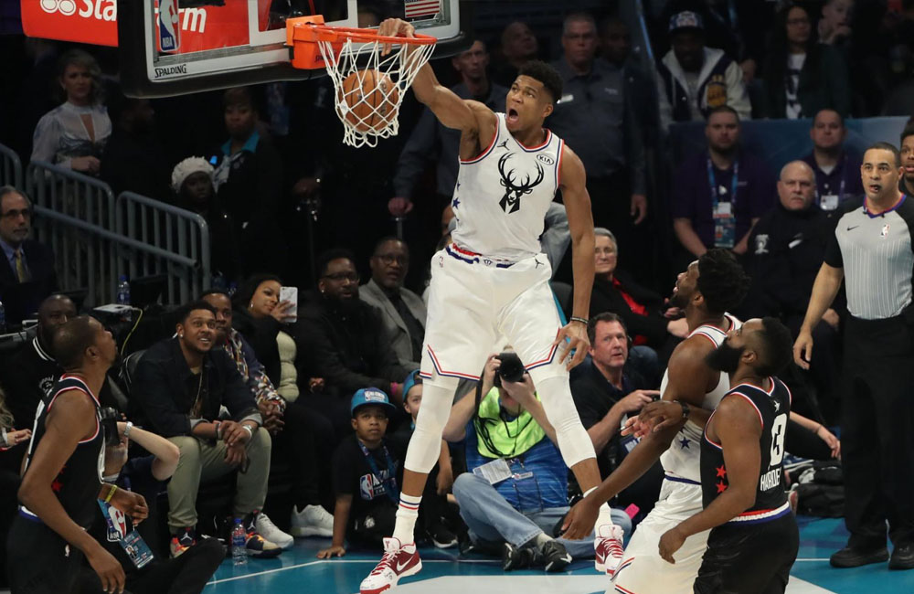
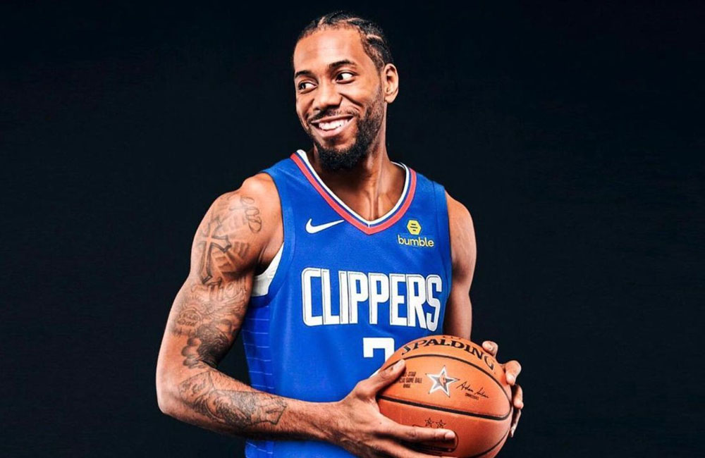
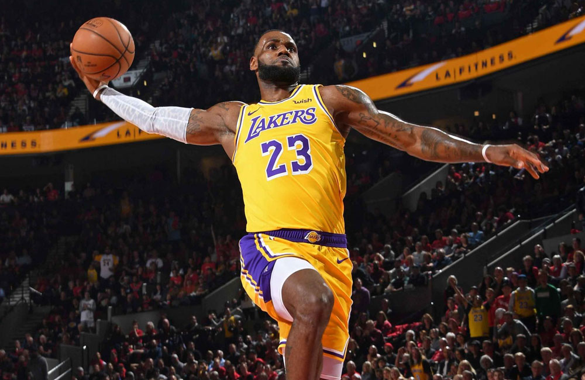
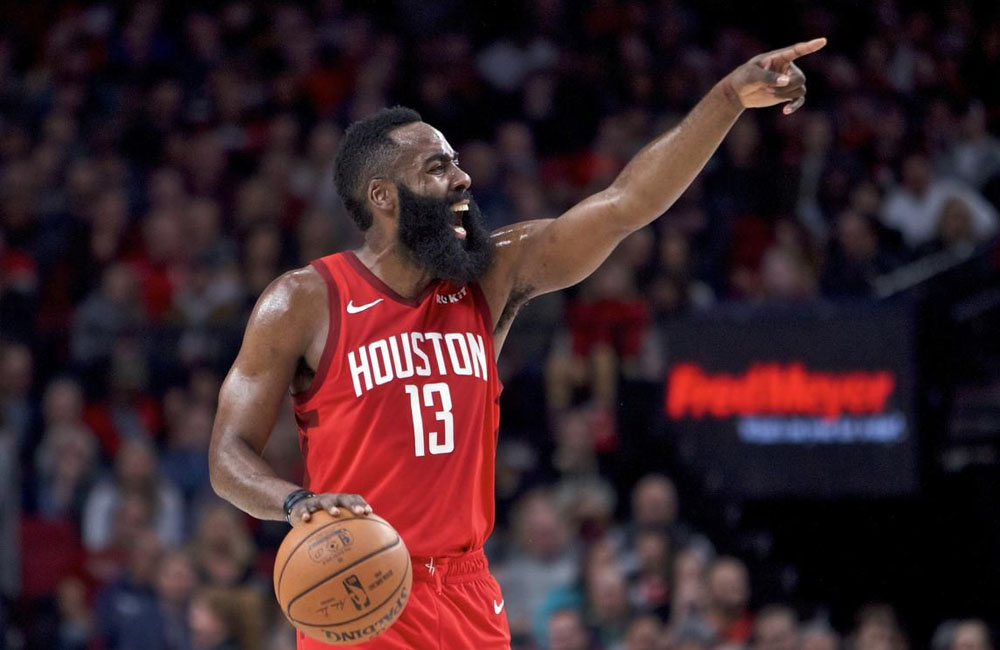
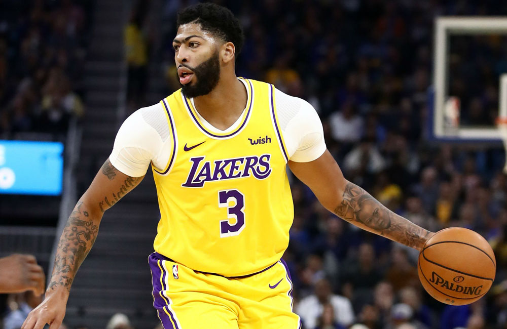

Xếp hạng top 5 cầu thủ hay nhất mùa giải NBA 2019-2020
1. Giannis Antetokounmpo

+ Đội bóng hiện tại: Milwaukee Bucks
+ Vị trí: Small Forward(Tiền Phong Phụ)
+ Xếp hạng mùa trước: 4
+ Dự đoán 2019-20 theo RPM wins: 14.4
Có một cuộc đua MVP 2018-2019 ngang tài ngang sức với James Harden, nhưng Antetokoumnpo vẫn chứng tỏ được mình xứng đáng hơn người xếp suýt soát ở vị trí thứ 2. Giờ đây đã có trong tay danh hiệu cá nhân cao quý nhất, The Greak Freak phải đối mặt với kì vọng to lớn mà người hâm mộ và đồng đội đặt vào anh và biến nó thành động lực để đạt được cột mốc lớn tiếp theo mà anh đặt ra, vô địch NBA.
2. Kawhi Leonard

+ Đội bóng hiện tại: Los Angeles Clippers
+ Vị trí: Small Forward
+ Xếp hạng mùa trước: 8
+ Dự đoán 2019-20 RPM wins: 6.5
+ Nếu so sánh sự đóng góp cụ thể của anh trong giai đoạn của vòng đấu loại trực tiếp(playoffs) so với vòng đấu bảng(regular) của mùa giải 2018-2019 thì sẽ là rất khập khiễng. Dù trong giai đoạn regular anh không thể hiện được nhiều nhưng
khi NBA 2018-2019 bắt đầu bước vào nửa sau của mùa giải thì lại là câu chuyện hoàn toàn khác. Leonard đã chơi tốt hơn bất cứ một cầu thủ nào cùng thời trong loạt trận playoff 2019, kết quả là anh giành chiến thắng trong cuộc đua Finals MVP, dẫn
dắt thành công đàn Raptor tới chức vô địch NBA đầu tiên trong lịch sử đội bóng.
3. Lebron James

+ Đội bóng hiện tại:Los Angeles Lakers
+ Vị trí: Small Forward
+ Xếp hạng mùa trước: 1
+ Dự đoán 2019-20 RPM wins: 11,3
Đây là lần đầu tiên từ khi có mặt trên NBArank bắt đầu từ mùa giải 2011-2012 mà Lebron không đứng ở hạng nhất. Mùa giải trước, James đạt chỉ số 27.4 điểm, 8.5 bắt bóng bật bảng và 8.3 kiến tạo trong khi thi đấu với số phút ít nhất sự nghiệp
là 35.2 phút/trận. Tuy vẫn có được cho mình một phong độ tốt nhưng ở trong cả VORP(giá trị hơn người chơi thay thế) và PER(Sức ảnh hưởng của cầu thủ) James đều nhận được những con số thấp nhất từng thấy trong sự nghiệp của mình. Đó cũng là một
mối lo dành cho LA Lakers khi dù có trong tay những ngôi sao hàng đầu, một dàn cầu thủ trẻ và tiềm năng, nhưng để đội bóng có thể chạm tới chức vô địch mùa giải tới thì chắc chắn sẽ nhờ vào phong độ và kinh nghiệm của King James.
4. James Harden

+ Đội bóng hiện tại:Houston Rockets
+ Vị trí: Shooting Guard
+ Xếp hạng mùa trước: 3
+ Dự đoán 2019-20 RPM wins: 15,7
Mùa giải trước, James Harden đã bỏ lỡ danh hiệu MVP thứ 2 trong sự nghiệp vào tay The Greak Freak, đó luôn là sự đáng tiếc nhất đối với cá nhân Harden khi mà anh đã có tới 32 trận liên tiếp ghi hơn 30 điểm, trong đó có tới 4 trận ghi trên
50 điểm và 1 trận ghi nhiều điểm nhất trong sự nghiệp Harden với 61 điểm. Mùa giải 2019-20 là mùa giải của những bộ đôi siêu sao, Harden cũng đã có cho mình một siêu sao bên cạnh là người bạn cũ Russell Westbrook, đều từng là những MVP với những
kỷ lục khủng, không biết bao nhiêu chỉ số sẽ bị phá vỡ với bộ đôi này khi mùa giải mới bắt đầu.
5. Anthony Davis

+ Đội bóng hiện tại:Los Angeles Lakers
+ Vị trí: Power Forward
+ Xếp hạng mùa trước: 6
+ Dự đoán 2019-20 RPM wins: 9,8
Dù từng được coi là một trong những PF tốt nhất lịch sử giải đấu nhưng không thể phủ nhận sự thật rằng kinh nghiệm của The Brow trong các mùa playoffs là rất ít, đội bóng cũ của anh là Pelicans chỉ lọt vào playoffs đúng một hai lần. Giờ đây
một mùa giải mới bắt đầu, anh sẽ khoác áo Lakers và sánh vai cùng với Lebron James để trở thành bộ đôi đáng sợ nhất giải đấu.